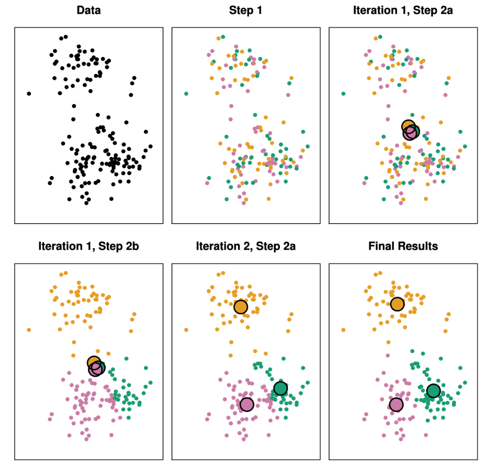

Let’s create a function for the \(K\)-means clustering algorithm, in R!

Details of the Above Figure:
The progress of the \(K\)-means algorithm with \(K = 3\).
Top left: The observations are shown.
Top center: In Step 1 of the algorithm, each observation is randomly assigned to a cluster using some kind of a label. It could be “1”, “2” or “green”, “red” etc.
Top right: In Step 2(a), the cluster centroids are computed by taking the mean of each cluster assignment. These are shown as large colored disks. Initially the centroids are almost completely overlapping because the initial cluster assignments were chosen at random.
Bottom left: In Step 2(b), each observation is assigned to the nearest centroid. This is done by computing the euclidean distance between each point and each of the cluster centers. Each point is assigned to the centroid that resulted in the smallest euclidean distance.
Bottom center: Step 2(a) is once again performed, leading to new cluster centroids.
Bottom right: The results obtained after 10 iterations.
Think about:
The iterative steps for the algorithm. What is the starting point? What is the update rule for the centroids? What is the update rule for the “assignment” of each data point to a cluster?
What data structures might you use for implementing this algorithm? DataFrames or vectors would be fine, just think about what you need to keep track of during each iteration.
Within your implementation, create a way to visualize our 2D dataset during each implementation. That is, it is helpful to visualize the cluster “assignments” and centroids during each iteration.
Let’s first look at a simple simulated example in which there are only two real clusters in the data. We will create a dataset where the first 25 observations have a mean shift relative to the next 25 observations.
Calculate the cluster centroids, by creating a variable named c1 representing the centroid (mean vector) of all points with the label "1" and c2 representing the centroid (mean vector) of all points with the label "2".
Write a function called compute_distance which takes in coordinates X1 and X2 for a given point, along with coordinates X1c and X2c for a given cluster centroid, and returns the euclidean distance between these two points. Then, test that your function works correctly by calling it to compute the distance between the example point \(X = (0.5, 1.0)\) and the example centroid \(c = (3.2,3.0)\) (the answer, for this case, should be 3.36006)
Next you need to re-assign the cluster labels according to the minimum distance between the cluster centroid and each point. You can accomplish this using for loops over the points (rows) in df.
In Questions 8.1 and 8.2 you will write functions for carrying out the two main steps of the \(K\)-means clustering algorithm, and then in Question 8.3 you will run the two functions 10 times. Then, in Question 9, you will visualize the resulting clusters, to see whether the 10 iterations worked!
Question 8.1
Write a function called update_labels. This function should take in the following arguments:
input_df: A data.frame where each row corresponds to a point in the dataset
input_c1: A centroid for the label "1" (represented as a length-2 numeric vector)
input_c2: A centroid for the label "2" (represented as a length-2 numeric vector)
The function should then loop over each point (row) in input_df, using an an if-else statement to check which cluster centroid (input_c1 or input_c2) is closer to the point and re-assign the point’s label accordingly. Once all of the points (rows in input_df) have been processed, the function should return the newly-updated input_df.
Write another function called update_centroids. This function should accept just one argument, called input_df, and should calculate new cluster centroids for each label ("1" and "2"), similar to what you did in Question 5. Once the centroids have been calculated, they should be returned as a list, whose first element is the centroid (the length-2 numeric vector) of the points with label "1" and whose sectond element is the centroid (the length-2 numeric vector) of the points with label "2".
Now you will use the functions written in Questions 8.1 and 8.2 to carry out the \(K\)-means algorithm. Using a for loop, use these two functions to update df, c1, and c2ten times in total.
# Your code here
for (i in1:10) {update_labels(df, c1, c2)update_centroids(df, c1, c2)print(list(c1, c2))}
Plot the points, the same way you did in Question 6, to see if two visibly-separated clusters have emerged after the ten iterations of the \(K\)-means clustering algorithm you carried out in the previous question.